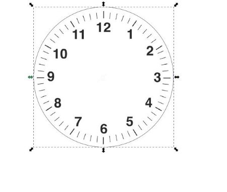
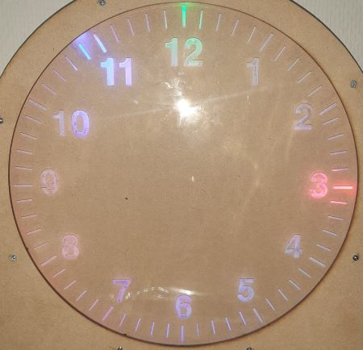
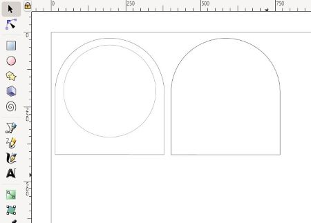
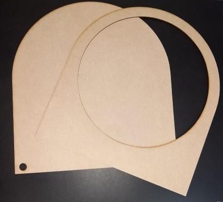
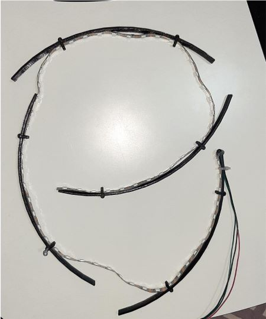
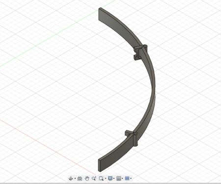
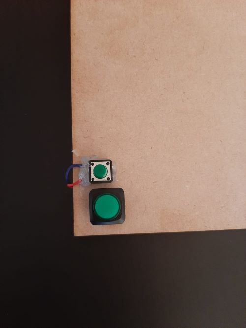
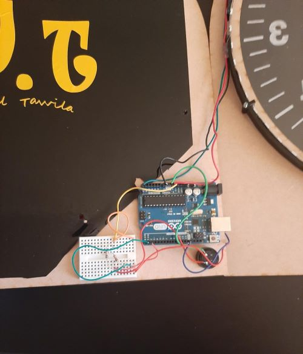
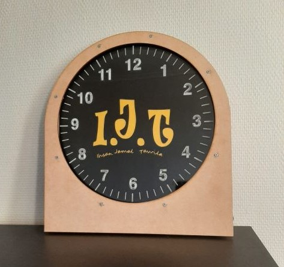

<!DOCTYPE html>
<html lang="nb">
	<head>
		<meta charset="utf-8"/>
		<meta name="viewport" content="width=device-width, initial-scale=1">				
		<link rel="stylesheet" type="text/css" href="css/style.css" >
		<title>DigiFab-Ihsan Tawila</title>
	</head>

	<body>
		<nav role="navigation">
		    <a class="home" href="index.html"></a>
		    <section id="myLinks">
				<a href="project1.html" >2D and 3D project</a>
				<a href="project2.html" >Arduino</a>
				<a href="project3.html" >Raspberry Pi</a>
				<a href="project4.html" >ESP32</a>
				<a href="project5.html" >3D printing</a>
				<a class="aktiv" href="project6.html" >Final project</a>
		    </section>
		    <a href="javascript:void(0);" class="icon" onclick="myFunction()">
			
		  </a>
		</nav>
		
		
		<header>
			<section>
				<h1 class="overskrift">Welcome to my FabAcademy portfolio</h1>
				<p>On this page you will find all the projects that I participated in with the DigiFab course. Hope you like it and Please contact
    				me if you have any questions or comments</p>
			</section>	
		</header>
		
		
		<main>
			<article>
				<h2>Final project</h2>
				<p>The final project that I will do is a light clock without hands. Lighting colors indicate the hour, minutes and seconds. 
				This project will depend on:</p>
				<ul>
					<li>Arduino</li>
					<li>3D printing</li>
					<li>Laser cutting</li>
				</ul>
			</article>
			
			<article>
				<h3>COMPONENTS AND SUPPLIES</h3>
				<ul>
					<li>Transparent plastic plate</li>
					<li>Potentiometer</li>
					<li>LCD (Liquid Crystal Display)</li>
					<li>Capacitore 1μF 3V </li>
					<li>2 LEDs</li>
					<li>2 Resistors 220</li>
					<li>Photoresistor</li>
					<li>Jumper wires</li>
				</ul>
			</article>
			
			<article>
				<h3>The transparent plastic plate</h3>
				<p>At first, I will cut the transparent plastic plate in the form of a circle, in addition to engraving the hour numbers 
				on it using the laser cutting machine. By drawing it on Illustrator or Inkscape, we get the following form:</p>
				
				
			</article>
			<article>
				<h3>Clock frame</h3>
				<p>I will design the outer shape of the watch by laser cutting. I will cut two pieces of the plank by drawing them on Inkscape as follows:</p>
				
				
			</article>
			<article>
				<h3>light strip</h3>
				<p>In this step, I will install the light strip on the plastic piece that I printed in the previous project, so that it becomes as follows</p>
				
				
			</article>
		
			<article>
				<h3>Montering</h3>
				<p>In this step I will group all the previous pieces together and make some minor adjustments. I also have to connect all the cables and install 
				two buttons to adjust the hour and minutes.Thus, I have finished the physics section of this project, so that the clock becomes as it is in the 
				following pictures and all I have left is to write the code.</p>
				
				
				
			</article>

			<article>
				<h3>The code</h3>
				<p>There are several ways to write the code either by using the delay() command. In this command, the clock will be inaccurate because the program
				will take fractions of a second to execute the commands, and thus we will have some slight differences that cause a difference in timing over time.
				So I used the millis() command, which calculates the time required to execute the program and calculates it within the base time. Thus, the clock 
				in this way is more accurate. The code I used is as follows:</p>
				<pre>#define FASTLED_INTERNAL
#include <FastLED.h>
#define NUM_LEDS 60
#define DATA_PIN A5

CRGB leds[NUM_LEDS];

int h=0;
int m=0;
int s=0;
int button1;
int button2;
int hs=1;
int ms=2;
static uint32_t last_time, now = 0; 

void setup(){
  FastLED.addLeds<NEOPIXEL, DATA_PIN>(leds, NUM_LEDS);  
  pinMode(hs,INPUT_PULLUP);
  pinMode(ms,INPUT_PULLUP);
  now=millis();  
}

void loop(){ 
  for(int x = 0; -1 < x && x < NUM_LEDS; x++ ){
     leds[x] = CRGB::Black;
     }
    FastLED.show();
    leds[s] = CRGB::Blue;
    leds[m] = CRGB::Green;
    leds[h*5] = CRGB::Red;
    FastLED.show();


for ( int i=0 ;i<5 ;i++){
  while ((now-last_time)<200)
  { 
    now=millis();
  }
 last_time=now; 
 button1=digitalRead(hs);
 button2=digitalRead(ms);

  if(button1==0){
   h=h+1;
  }

 if(button2==0){
  s=0;
  m=m+1;
  }
 if(s==60){
  s=0;
  m=m+1;
 }
 if(m==60)
 {
  m=0;
  h=h+1;
 }
 if(h==12)
 {
  h=0;
 }

 if((button1==0)|(button2==0)){
  for(int x = 0; -1 < x && x < NUM_LEDS; x++ ){
     leds[x] = CRGB::Black;
     }
    FastLED.show();
    leds[s] = CRGB::Blue;
    leds[m] = CRGB::Green;
    leds[h*5] = CRGB::Red;
    FastLED.show();
 }
}

 s=s+1; 
 if(s==60){
  s=0;
  m=m+1;
 }
 if(m==60)
 {
  m=0;
  h=h+1;
 }
 if(h==12)
 {
  h=0;
 } 
}
				</pre>
			</article>	

        <article>
			<h3>Finally</h3>
				<p>After uploading the previous code to the Arduino, we can say that the project has been completed and the clock is ready to work.
				I have written all the steps in a simple and clear way. I hope you like it.</p>

			<section>
				<p> <video width="500px" controls autoplay loop muted preload="none">
					<source src="photo/klokka.mp4" type="video/mp4">
					Sorry!! Your browser doesn't support video technology
				</video></p>						
			</section>
        </article>

			
		</main>
		
		<footer>
			<article>
				<ul>
					<li>Sosial:</li>
					<li><a href="#"></a></li>
					<li><a href="#"></a></li>
					<li><a href="#"></a></li>										
				</ul>
				<ul>
					<li>Kontakt:</li>
					<li><a href="mailto:ehsan2ila91@gmail.com">ehsan2ila91@gmail.com</a></li>					
					<li>0047 451 96 228</li>
					<li>Halden, Norge</li>
				</ul>
				
			</article>

			<p class="end">Ihsan Jamal Tawila 	&copy; 2020. E-post: <a class="registrere" href="mailto:ehsan2ila91@gmail.com">ehsan2ila91@gmail.com</a></p>
		</footer>
	         
			<script>
			function myFunction() {
			  var x = document.getElementById("myLinks");
			  if (x.style.display === "block") {
				x.style.display = "none";
			  } else {
				x.style.display = "block";
			  }
			}
			</script>

	
	</body>

</html>